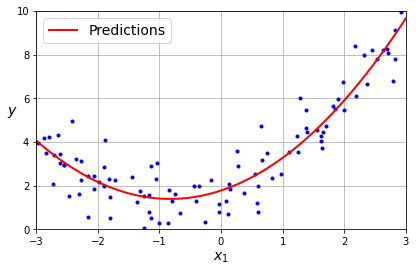
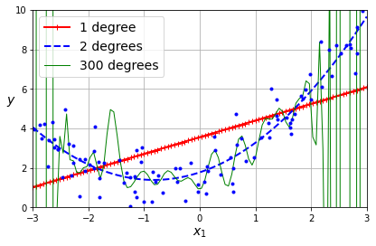
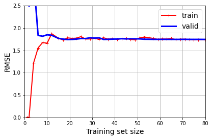

Section 2 — Training Linear Models & Support Vector Machines
Κανόνας πηγών: Το παρόν υλικό είναι απλή ελληνική επεξήγηση μόνο των ανεβασμένων αρχείων DAMA61 ΟΣΣ2, Géron Chapter 4/5, δύο notebooks και δύο απομαγνητοφωνήσεων. Οι τίτλοι και η ομαδοποίηση αποτελούν διδακτική ταξινόμηση της ίδιας ύλης. Δεν προστίθεται νέα θεωρία, νέο dataset ή πρωτότυπη άσκηση.
Ανάγνωση παραπομπών: Η «σελίδα PDF» είναι η θέση στο πραγματικό ανεβασμένο αρχείο. Το «κελί» στο .ipynb αριθμείται από 0, όπως βρίσκεται αποθηκευμένο στη σειρά cells. Οι απομαγνητοφωνήσεις δεν περιλαμβάνουν timestamps και τεκμηριώνονται με γραμμές.
Κώδικας: Παραθέτουμε μόνο πραγματικά αποσπάσματα notebook και εξηγούμε τη σύνδεσή τους με τα προηγούμενα κελιά. Δεν ισχυριζόμαστε νέα εκτέλεση. NOT EXECUTED (νέα εκτέλεση). Αποθηκευμένα outputs του πρωτοτύπου αναγνωρίζονται ρητά ως τέτοια.
Part 3 — Πολυωνυμικά μοντέλα και γενίκευση
Μάθημα 07 — Πολυωνυμική παλινδρόμηση: δημιουργία νέων χαρακτηριστικών
Προαπαιτούμενα από την υπάρχουσα ύλη: Μαθήματα 02–03.
Από την πηγή — τι διδάσκεται
Η πολυωνυμική παλινδρόμηση εμφανίζεται όταν η τάση των δεδομένων δεν περιγράφεται αρκετά καλά με ευθεία. Η πηγή διατηρεί την ιδέα των βαρών, αλλά εμπλουτίζει τα χαρακτηριστικά με δυνάμεις του αρχικού χ: το χ στο τετράγωνο, το χ στον κύβο και ούτω καθεξής. Η ΟΣΣ2 ονομάζει τον βαθμό του πολυωνύμου ρ και εξηγεί ότι η διαδικασία έχει δύο στάδια: μετασχηματισμό των δεδομένων και γραμμική μοντελοποίηση στον νέο χώρο χαρακτηριστικών.
Ο πολυωνυμικός τύπος είναι γραμμικός ως προς τα βάρη, ακόμη κι αν περιέχει μη γραμμικές δυνάμεις του χ. Η διαφορά είναι στα χαρακτηριστικά που δίνουμε στο γραμμικό μοντέλο, όχι στον τρόπο που συνδυάζονται οι συντελεστές του.
Οπτική εξήγηση — πραγματικά σχήματα της πηγής

Αυθεντικό αποθηκευμένο διάγραμμα: 04_training_linear_models(1).ipynb — κελί 46 (αρίθμηση από το 0). Αναπαράγεται από το υπάρχον output του notebook· NOT EXECUTED εδώ.
Πώς να το διαβάσεις: Η κόκκινη καμπύλη ακολουθεί τη μη ευθύγραμμη τάση των μπλε σημείων. Πρόκειται για την προσαρμογή με το x και το x² της πηγής, χωρίς να φτιάχνουμε άλλο αριθμητικό παράδειγμα.
Απλή επεξήγηση της ίδιας έννοιας
Με μία είσοδο χ, η πηγή δημιουργεί επιπλέον χαρακτηριστικό χ στο τετράγωνο. Το PolynomialFeatures προετοιμάζει αυτόν τον μετασχηματισμό και μετά το LinearRegression μαθαίνει βάρη για τις νέες στήλες. Δεν σημαίνει ότι το μοντέλο απομνημονεύει καμπύλες: μαθαίνει συγκεκριμένους συντελεστές που προσαρμόζονται στα παρατηρημένα δεδομένα.
Η ΟΣΣ2 χρησιμοποιεί επίσης το διάνυσμα φι του χ, που περιλαμβάνει τις δυνάμεις ως νέα στοιχεία. Στον τύπο περιλαμβάνεται ο σταθερός όρος. Στο notebook το include_bias=False σημαίνει ότι ο μετασχηματιστής δεν προσθέτει αυτόνομη στήλη σταθεράς, αφού ο ακολουθών estimator χειρίζεται το δικό του intercept.
Καθοδηγούμενη εξήγηση — ακολουθούμε αργά την ίδια πηγή
Η πολυωνυμική παλινδρόμηση αρχίζει από τα ίδια δεδομένα εισόδου που ήδη έχουμε. Αντί να μείνουμε μόνο στο χι, δημιουργούμε από αυτό και το χι στο τετράγωνο, στο κύβο ή σε άλλη δύναμη, έως τον βαθμό ρο που ορίζει η πηγή. Δεν σημαίνει ότι μετρήσαμε νέα φυσική μεταβλητή. Υπολογίσαμε νέο χαρακτηριστικό από μια γνωστή μέτρηση.
Έπειτα γίνεται το δεύτερο στάδιο της ΟΣΣ2: εφαρμόζουμε γραμμική παλινδρόμηση στο μετασχηματισμένο σύνολο χαρακτηριστικών. Τα βάρη εξακολουθούν να συμμετέχουν γραμμικά. Αυτή είναι η ουσιώδης διάκριση ανάμεσα στη μη γραμμική σχέση των χαρακτηριστικών και στη γραμμικότητα ως προς τους συντελεστές.
Ο Géron έχει δοσμένο αριθμητικό παράδειγμα: όταν το αρχικό χι είναι περίπου −0.75275929 και επιλέγουμε βαθμό δύο, η νέα δεύτερη τιμή είναι το τετράγωνό του, περίπου 0.56664654. Στο notebook η PolynomialFeatures ορίζει τον βαθμό και η fit_transform παράγει τον μετασχηματισμένο πίνακα. Οι αριθμοί είναι οι αποθηκευμένοι αριθμοί του βιβλίου.
Οι τύποι της πηγής και τι σημαίνουν
Προφορική ανάγνωση και επεξήγηση: Η πρόβλεψη είναι ο σταθερός όρος, συν βάρος επί χι, συν άλλο βάρος επί χι στο τετράγωνο, και συνεχίζουμε μέχρι τη δύναμη ρο. Το φι του χι οργανώνει αυτές τις δυνάμεις σε νέο διάνυσμα χαρακτηριστικών.
Αριθμητικό παράδειγμα ή εφαρμογή — αποκλειστικά από την πηγή
Πραγματικό παράδειγμα Géron: Τα δεδομένα παράγονται από y=0.5*X**2+X+2+noise. Για την πρώτη είσοδο του notebook X[0] = [-0.75275929] ο μετασχηματισμός δίνει X_poly[0]=[-0.75275929, 0.56664654], επειδή το δεύτερο χαρακτηριστικό είναι το τετράγωνο της εισόδου.
Βασική Python από το πραγματικό notebook
Πριν από τον κώδικα: Η διαδικασία και η σειρά των εντολών έχουν οριστεί από τα συγκεκριμένα κελιά του δοσμένου notebook. Δεν δημιουργούμε νέα υλοποίηση.
Ακριβές απόσπασμα του παρεχόμενου 04_training_linear_models(1).ipynb, κελί 41 (αρίθμηση από 0):
np.random.seed(42)
m = 100
X = 6 * np.random.rand(m, 1) - 3
y = 0.5 * X ** 2 + X + 2 + np.random.randn(m, 1)Ακριβές απόσπασμα του παρεχόμενου 04_training_linear_models(1).ipynb, κελί 43 (αρίθμηση από 0):
from sklearn.preprocessing import PolynomialFeatures
poly_features = PolynomialFeatures(degree=2, include_bias=False)
X_poly = poly_features.fit_transform(X)
X[0]Ακριβές απόσπασμα του παρεχόμενου 04_training_linear_models(1).ipynb, κελί 44 (αρίθμηση από 0):
X_poly[0]Ακριβές απόσπασμα του παρεχόμενου 04_training_linear_models(1).ipynb, κελί 45 (αρίθμηση από 0):
lin_reg = LinearRegression()
lin_reg.fit(X_poly, y)
lin_reg.intercept_, lin_reg.coef_Επεξήγηση των πραγματικών βημάτων: Κελί 41: ορίζει ακριβώς τα δεδομένα του συγκεκριμένου παραδείγματος. Κελί 43: εισάγει PolynomialFeatures, ορίζει degree=2 και καλεί fit_transform(X). Το κελί 44 δείχνει το πρώτο νέο ζεύγος χαρακτηριστικών. Το κελί 45 χρησιμοποιεί τη γνωστή LinearRegression πάνω στο X_poly και διαβάζει τα εκτιμημένα βάρη.
Εκτέλεση: NOT EXECUTED εδώ· οποιαδήποτε αριθμητική έξοδος παραπάνω είναι αποθηκευμένη στο πρωτότυπο notebook.
Η πραγματική μετατροπή ενός χαρακτηριστικού
Στο notebook υπάρχει η τιμή . Ο πολυωνυμικός μετασχηματισμός βαθμού 2 κρατά την αρχική τιμή και προσθέτει το τετράγωνό της:
Άρα η νέα γραμμή χαρακτηριστικών που καταγράφει το notebook περιέχει . Το πρώτο στοιχείο δεν άλλαξε· το δεύτερο προήλθε από πράξη πάνω στο πρώτο. Ο σκοπός εδώ δεν είναι να λύσουμε μια νέα άσκηση, αλλά να καταλάβουμε τι εννοεί η εντολή PolynomialFeatures(degree=2, include_bias=False). Πηγή: Géron, Chapter 4 — Polynomial Regression, σελ. PDF 15–16· N4, κελιά 43–44.
Διαβάζουμε τον πραγματικό κώδικα γραμμή προς γραμμή
Οι παρακάτω παρατηρήσεις εξηγούν μόνο τις εντολές που υπάρχουν ήδη στα παρατιθέμενα αποσπάσματα. Δεν αποτελούν νέο πρόγραμμα. Για την ακριβή προέλευση κάθε block χρησιμοποιούμε τις ήδη σημειωμένες παραπομπές notebook/κελιού του μαθήματος. Νέα εκτέλεση: NOT EXECUTED.
Απόσπασμα 1, στη σειρά της πηγής: - np.random.seed(42) — Ορίζει τη σταθερή αρχική κατάσταση τυχαιότητας για αναπαραγωγιμότητα του συγκεκριμένου παραδείγματος. - m = 100 — Καταγράφει το πλήθος των δειγμάτων που θα χρησιμοποιηθούν στους υπολογισμούς. - X = 6 * np.random.rand(m, 1) - 3 — Δημιουργεί τις συγκεκριμένες τυχαίες τιμές εισόδου ακριβώς όπως τις ορίζει η πηγή. - y = 0.5 * X ** 2 + X + 2 + np.random.randn(m, 1) — Ορίζει τις πραγματικές εξόδους αυτού του παραδείγματος από την υπάρχουσα σχέση, μαζί με τον θόρυβο της πηγής. Απόσπασμα 2, στη σειρά της πηγής: - from sklearn.preprocessing import PolynomialFeatures — Φέρνει στον κώδικα τη βιβλιοθήκη, τη συνάρτηση ή την κλάση που χρησιμοποιείται ήδη σε αυτό το δοσμένο παράδειγμα. - poly_features = PolynomialFeatures(degree=2, include_bias=False) — Επιλέγει τον βαθμό των υπαρκτών πολυωνυμικών χαρακτηριστικών και τον χειρισμό του σταθερού όρου. - X_poly = poly_features.fit_transform(X) — Εφαρμόζει τον ήδη ορισμένο μετασχηματισμό στις εισόδους και δημιουργεί τον μετασχηματισμένο πίνακα. - X[0] — Ζητά να εμφανιστεί η τιμή που έχει ήδη υπολογιστεί από τα προηγούμενα βήματα του notebook. Απόσπασμα 3, στη σειρά της πηγής: - X_poly[0] — Ζητά να εμφανιστεί η τιμή που έχει ήδη υπολογιστεί από τα προηγούμενα βήματα του notebook. Απόσπασμα 4, στη σειρά της πηγής: - lin_reg = LinearRegression() — Δημιουργεί το γραμμικό μοντέλο που θα εκπαιδευτεί με τα δεδομένα της προηγούμενης εντολής. - lin_reg.fit(X_poly, y) — Εκπαιδεύει το ήδη ορισμένο μοντέλο στα συγκεκριμένα χαρακτηριστικά και τις γνωστές εξόδους. - lin_reg.intercept_, lin_reg.coef_ — Διαβάζει τον σταθερό όρο και τα βάρη που έμαθε το μοντέλο, χωρίς νέα εκπαίδευση.
Περιορισμοί και προσοχή
Πολύ υψηλός πολυωνυμικός βαθμός αυξάνει την ευελιξία αλλά μπορεί να οδηγήσει σε overfitting, όπως δείχνει το επόμενο μάθημα.
Τι κρατώ από το υπάρχον μάθημα
Polynomial Regression = μετασχηματισμός χαρακτηριστικών + γραμμικό μοντέλο στα νέα χαρακτηριστικά.
Μάθημα 08 — Overfitting, Underfitting, Learning Curves και Bias–Variance
Προαπαιτούμενα από την υπάρχουσα ύλη: Μαθήματα 03 και 07.
Από την πηγή — τι διδάσκεται
Ο Géron συγκρίνει πολυωνυμικά μοντέλα διαφορετικού βαθμού στα ίδια δεδομένα. Όταν το μοντέλο είναι πολύ απλό, μπορεί να μην αναπαριστά επαρκώς τη σχέση των δεδομένων: αυτό ονομάζεται underfitting. Όταν είναι υπερβολικά ευέλικτο και προσαρμόζεται ακόμη και στον θόρυβο των παρατηρήσεων, μπορεί να αποδίδει καλά στα γνωστά δείγματα αλλά χειρότερα στα νέα: αυτό ονομάζεται overfitting.
Για να μελετηθεί αυτή η διαφορά, το βιβλίο χρησιμοποιεί learning curves: καμπύλες σφάλματος training και validation ως προς το μέγεθος του training set. Η απόσταση των δύο καμπυλών είναι χρήσιμη: μεγάλο χάσμα αποτελεί ένδειξη overfitting, ενώ δύο σχετικά υψηλά σφάλματα που πλησιάζουν μεταξύ τους υποδεικνύουν underfitting. Η διάκριση bias–variance δείχνει ότι υπάρχουν διαφορετικές πηγές σφάλματος γενίκευσης.
Οπτική εξήγηση — πραγματικά σχήματα της πηγής

Αυθεντικό αποθηκευμένο διάγραμμα: 04_training_linear_models(1).ipynb — κελί 47 (αρίθμηση από το 0). Αναπαράγεται από το υπάρχον output του notebook· NOT EXECUTED εδώ.
Πώς να το διαβάσεις: Η ευθεία του μικρού βαθμού δεν ακολουθεί καλά την καμπυλότητα. Η πολύ κυματιστή γραμμή υψηλού βαθμού ακολουθεί υπερβολικά τα μεμονωμένα σημεία.

Αυθεντικό αποθηκευμένο διάγραμμα: 04_training_linear_models(1).ipynb — κελί 49 (αρίθμηση από το 0). Αναπαράγεται από το υπάρχον output του notebook· NOT EXECUTED εδώ.
Πώς να το διαβάσεις: Ο κατακόρυφος άξονας μετρά RMSE και ο οριζόντιος το μέγεθος εκπαίδευσης. Δες την απόσταση των δύο καμπυλών καθώς αυξάνονται τα δείγματα.
Απλή επεξήγηση της ίδιας έννοιας
Το training error λέει πόσο καλά αποδίδουμε στα ήδη χρησιμοποιημένα δεδομένα. Το validation error λέει πόσο καλά αποδίδουμε σε δεδομένα ελέγχου κατά την ανάπτυξη του μοντέλου. Δεν τα συγχέουμε. Ένα πολύ μικρό training error από μόνο του δεν εξασφαλίζει γενίκευση.
Το notebook παράγει δύο τύπους learning curves, χρησιμοποιώντας την learning_curve, και δείχνει τα αποτελέσματα για γραμμική και πολυωνυμική παλινδρόμηση βαθμού δέκα. Το υλικό συνδέει το πρόβλημα με επιλογή πολυωνυμικού βαθμού, χρήση regularization και ποσότητα δεδομένων.
Καθοδηγούμενη εξήγηση — ακολουθούμε αργά την ίδια πηγή
Στο συγκεκριμένο κεφάλαιο συγκρίνονται μοντέλα διαφορετικού πολυωνυμικού βαθμού. Το σχήμα 4-14 περιλαμβάνει βαθμούς 1, 2 και 300. Το λάθος δεν είναι να χρησιμοποιήσουμε ένα πολυώνυμο, αλλά να επιλέξουμε τόσο ευέλικτη μορφή ώστε να ακολουθεί και τον τυχαίο θόρυβο των δεδομένων εκπαίδευσης.
Η πηγή μάς δίνει ένα πρακτικό κριτήριο ανάγνωσης των learning curves. Κοιτάζουμε ξεχωριστά το training error και το validation error. Αν το πρώτο είναι μικρό και το δεύτερο παραμένει σημαντικά υψηλότερο, έχουμε ένδειξη υπερπροσαρμογής. Αν και τα δύο είναι υψηλά και κοντά μεταξύ τους, η πηγή περιγράφει υποπροσαρμογή. Δεν αποφασίζουμε μόνο από το πόσο ωραία φαίνεται η γραμμή επάνω στα ήδη γνωστά σημεία.
Το notebook κατασκευάζει τις ίδιες καμπύλες μέσω των δοσμένων μοντέλων και δεδομένων. Η ουσία του παραδείγματος είναι να διαβάσουμε τις δύο καμπύλες μαζί, όχι να αποστηθίσουμε μια εικόνα απομονωμένη από την έννοια της γενίκευσης.
Αριθμητικό παράδειγμα ή εφαρμογή — αποκλειστικά από την πηγή
Σχήματα πραγματικής πηγής: Σχήμα 4-14: σύγκριση μοντέλων βαθμού 1, 2 και 300. Σχήματα 4-15 και 4-16: learning curves της γραμμικής και της πολυωνυμικής παλινδρόμησης. Ο συγγραφέας χρησιμοποιεί συνθετικά δεδομένα που δημιουργήθηκαν στα προηγούμενα κελιά.
Βασική Python από το πραγματικό notebook
Πριν από τον κώδικα: Η διαδικασία και η σειρά των εντολών έχουν οριστεί από τα συγκεκριμένα κελιά του δοσμένου notebook. Δεν δημιουργούμε νέα υλοποίηση.
Ακριβές απόσπασμα του παρεχόμενου 04_training_linear_models(1).ipynb, κελί 49 (αρίθμηση από 0):
from sklearn.model_selection import learning_curve
train_sizes, train_scores, valid_scores = learning_curve(
LinearRegression(), X, y, train_sizes=np.linspace(0.01, 1.0, 40), cv=5,
scoring="neg_root_mean_squared_error")
train_errors = -train_scores.mean(axis=1)
valid_errors = -valid_scores.mean(axis=1)
plt.figure(figsize=(6, 4)) # extra code – not needed, just formatting
plt.plot(train_sizes, train_errors, "r-+", linewidth=2, label="train")
plt.plot(train_sizes, valid_errors, "b-", linewidth=3, label="valid")
# extra code – beautifies and saves Figure 4–15
plt.xlabel("Training set size")
plt.ylabel("RMSE")
plt.grid()
plt.legend(loc="upper right")
plt.axis([0, 80, 0, 2.5])
save_fig("underfitting_learning_curves_plot")
plt.show()Ακριβές απόσπασμα του παρεχόμενου 04_training_linear_models(1).ipynb, κελί 50 (αρίθμηση από 0):
from sklearn.pipeline import make_pipeline
polynomial_regression = make_pipeline(
PolynomialFeatures(degree=10, include_bias=False),
LinearRegression())
train_sizes, train_scores, valid_scores = learning_curve(
polynomial_regression, X, y, train_sizes=np.linspace(0.01, 1.0, 40), cv=5,
scoring="neg_root_mean_squared_error")Επεξήγηση των πραγματικών βημάτων: Το κελί 49 εισάγει learning_curve, χρησιμοποιεί LinearRegression, cv=5, scoring="neg_root_mean_squared_error", μετατρέπει τα αρνητικά scores σε σφάλματα και σχεδιάζει τις καμπύλες. Το κελί 50 σχηματίζει make_pipeline(PolynomialFeatures(degree=10,...), LinearRegression()) και υπολογίζει ανάλογες τιμές. Τα X, y έχουν οριστεί νωρίτερα.
Εκτέλεση: NOT EXECUTED εδώ· οποιαδήποτε αριθμητική έξοδος παραπάνω είναι αποθηκευμένη στο πρωτότυπο notebook.
Διαβάζουμε τον πραγματικό κώδικα γραμμή προς γραμμή
Οι παρακάτω παρατηρήσεις εξηγούν μόνο τις εντολές που υπάρχουν ήδη στα παρατιθέμενα αποσπάσματα. Δεν αποτελούν νέο πρόγραμμα. Για την ακριβή προέλευση κάθε block χρησιμοποιούμε τις ήδη σημειωμένες παραπομπές notebook/κελιού του μαθήματος. Νέα εκτέλεση: NOT EXECUTED.
Απόσπασμα 1, στη σειρά της πηγής: - from sklearn.model_selection import learning_curve — Φέρνει στον κώδικα τη βιβλιοθήκη, τη συνάρτηση ή την κλάση που χρησιμοποιείται ήδη σε αυτό το δοσμένο παράδειγμα. - train_sizes, train_scores, valid_scores = learning_curve( — Υπολογίζει σφάλματα εκπαίδευσης και επικύρωσης σε διαφορετικά μεγέθη δεδομένων, σύμφωνα με το notebook. - LinearRegression(), X, y, train_sizes=np.linspace(0.01, 1.0, 40), cv=5, — Δημιουργεί τις αριθμητικές θέσεις που χρησιμοποιεί το βιβλίο για την προβολή του μοντέλου. - scoring="neg_root_mean_squared_error") — Επιλέγει το μέτρο σφάλματος που δίνεται ρητά από το notebook για τις learning curves. - train_errors = -train_scores.mean(axis=1) — Μετατρέπει τα scores της βιβλιοθήκης στις τιμές σφάλματος που παρουσιάζονται στις καμπύλες. - valid_errors = -valid_scores.mean(axis=1) — Μετατρέπει τα scores της βιβλιοθήκης στις τιμές σφάλματος που παρουσιάζονται στις καμπύλες. - plt.figure(figsize=(6, 4)) # extra code – not needed, just formatting — Διαμορφώνει το υπάρχον διάγραμμα του notebook, χωρίς να αλλάζει τα δεδομένα ή τη μαθηματική μέθοδο. - plt.plot(train_sizes, train_errors, "r-+", linewidth=2, label="train") — Διαμορφώνει το υπάρχον διάγραμμα του notebook, χωρίς να αλλάζει τα δεδομένα ή τη μαθηματική μέθοδο. - plt.plot(train_sizes, valid_errors, "b-", linewidth=3, label="valid") — Διαμορφώνει το υπάρχον διάγραμμα του notebook, χωρίς να αλλάζει τα δεδομένα ή τη μαθηματική μέθοδο. - # extra code – beautifies and saves Figure 4–15 — Σχόλιο που υπάρχει στον πρωτότυπο κώδικα και εξηγεί το συγκεκριμένο βήμα. - plt.xlabel("Training set size") — Διαμορφώνει το υπάρχον διάγραμμα του notebook, χωρίς να αλλάζει τα δεδομένα ή τη μαθηματική μέθοδο. - plt.ylabel("RMSE") — Διαμορφώνει το υπάρχον διάγραμμα του notebook, χωρίς να αλλάζει τα δεδομένα ή τη μαθηματική μέθοδο. - plt.grid() — Διαμορφώνει το υπάρχον διάγραμμα του notebook, χωρίς να αλλάζει τα δεδομένα ή τη μαθηματική μέθοδο. - plt.legend(loc="upper right") — Διαμορφώνει το υπάρχον διάγραμμα του notebook, χωρίς να αλλάζει τα δεδομένα ή τη μαθηματική μέθοδο. - plt.axis([0, 80, 0, 2.5]) — Διαμορφώνει το υπάρχον διάγραμμα του notebook, χωρίς να αλλάζει τα δεδομένα ή τη μαθηματική μέθοδο. - save_fig("underfitting_learning_curves_plot") — Διατηρεί τη συγκεκριμένη εντολή του αρχικού notebook ως μέρος του υπάρχοντος υπολογισμού, χωρίς αλλαγή στον αλγόριθμο. - plt.show() — Διαμορφώνει το υπάρχον διάγραμμα του notebook, χωρίς να αλλάζει τα δεδομένα ή τη μαθηματική μέθοδο. Απόσπασμα 2, στη σειρά της πηγής: - from sklearn.pipeline import make_pipeline — Φέρνει στον κώδικα τη βιβλιοθήκη, τη συνάρτηση ή την κλάση που χρησιμοποιείται ήδη σε αυτό το δοσμένο παράδειγμα. - polynomial_regression = make_pipeline( — Συνδέει τα επιμέρους βήματα στην ακριβή σειρά με την οποία τα εκτελεί η πηγή. - PolynomialFeatures(degree=10, include_bias=False), — Επιλέγει τον βαθμό των υπαρκτών πολυωνυμικών χαρακτηριστικών και τον χειρισμό του σταθερού όρου. - LinearRegression()) — Δημιουργεί το γραμμικό μοντέλο που θα εκπαιδευτεί με τα δεδομένα της προηγούμενης εντολής. - train_sizes, train_scores, valid_scores = learning_curve( — Υπολογίζει σφάλματα εκπαίδευσης και επικύρωσης σε διαφορετικά μεγέθη δεδομένων, σύμφωνα με το notebook. - polynomial_regression, X, y, train_sizes=np.linspace(0.01, 1.0, 40), cv=5, — Δημιουργεί τις αριθμητικές θέσεις που χρησιμοποιεί το βιβλίο για την προβολή του μοντέλου. - scoring="neg_root_mean_squared_error") — Επιλέγει το μέτρο σφάλματος που δίνεται ρητά από το notebook για τις learning curves.
Περιορισμοί και προσοχή
Οι καμπύλες προέρχονται από συγκεκριμένα δεδομένα και επιλογές του συγγραφέα. Δεν αποτελούν εγγύηση για νέο dataset ούτε επίσημη εξεταστική πρόβλεψη.
Τι κρατώ από το υπάρχον μάθημα
Underfitting: πολύ απλό μοντέλο· Overfitting: υπερβολική προσαρμογή· έλεγχε training και validation ξεχωριστά.